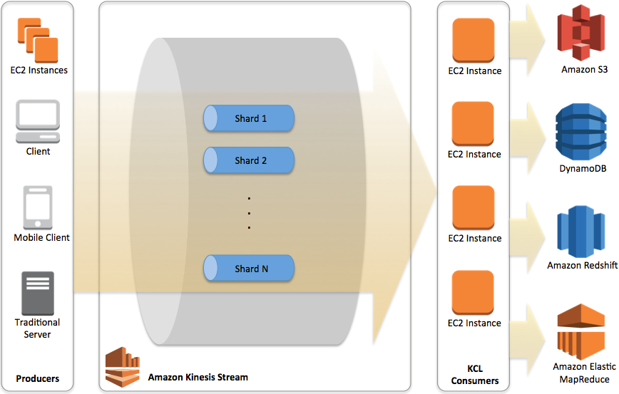

Kinesis Data Streams
Ingress Limitations
- Each shard can support writes up to 1,000 records per second, up to a maximum data write total of 1 MB per second.
- Each PutRecords request can support up to 500 records.
- Each record in the request can be as large as 1 MB, up to a limit of 5 MB for the entire request, including partition keys.
- The maximum size of a data blob (the data payload before Base64-encoding) is 1 megabyte (MB).
Kinesis Producer Library
- The Amazon Kinesis Producer Library (KPL) performs many tasks common to creating efficient and reliable producers for Amazon Kinesis. By using the KPL, customers do not need to develop the same logic every time they create a new application for data ingestion.
- RecordMaxBufferedTime: Maximum amount of time a record is buffered. Large value provides better performance, but causes delay.
- On the same host, KPL achieves around 800 times greater throughput.
- Batching, retries, and monitoring - implementing these by every producer is cumbersome, that is why KPL was created.
What KPL handles:
- Multi-threading
- Batching records, instead of sending records one by one (You can save on HTTP Headers space; instead of headers being sent in every request, batching saves on that bandwidth)
- With Batching (i.e. use of PutRecords, some records will partially fail and must be retried.)
- Retry of failed response from Amazon Kinesis API. This also requires exponential backoff handling.
- if you retried failed records without any backoff, then you might end up spamming a shard even though it’s already having problems.
In a cost-optimal architecture, we all want to have as few shards as possible, but still be able to ingest all data promptly at peak traffic.
To reduce overhead and increase throughput, the application must batch records and implement parallel HTTP requests. It also must deal with the transient failures inherent to any network application and perform retries as needed. And in a large-scale application, monitoring is needed to allow operators to diagnose and troubleshoot any issues that arise.
KPL Features
- Batching of puts using PutRecords
- Tracking of record age and enforcement of maximum buffering times
- Per-shard record aggregation (the Aggregator)
- Retries in case of errors, with ability to distinguish between retryable and non-retryable errors
- Per-shard rate limiting to prevent excessive and pointless spamming
- Useful metrics and a highly efficient CloudWatch client
Aggregation
- Record aggregation allows customers to combine multiple records into a single Kinesis Data Streams record. This allows customers to improve their per shard throughput.
- You want a binary format that’s unambiguous between the aggregated and non-aggregated case, such that every record can be deserialized correctly at the consumer. This requires code not just in the producer, but the consumer as well.
Collection
- Collection refers to batching multiple Kinesis Data Streams records and sending them in a single HTTP request with a call to the API operation PutRecords, instead of sending each Kinesis Data Streams record in its own HTTP request.
KPL aggregates multiple records into a single Amazon Kinesis Record, and collects multiple Amazon Kinesis Records into a single PutRecords API call.
Async and Futures
- KPL has an asynchronous interface that does not block.
- When addUserRecord is called, the record is placed into a queue serviced by another thread and the method returns immediately with a ListenableFuture object.
- To this, a FutureCallback object can be added that is invoked when the record completes.
- Adding the callback is optional, which means the API can be used in a fire-and-forget fashion.
KDS vs Amazon DynamoDB streams
- Amazon DynamoDB streams offers only 24 hours data retention vs. KDF (configurable upto 365 days)
- DynamoDB cost is higher than that of KDF
Kinesis Agent
- Kinesis Agent is a stand-alone Java software application that offers an easy way to collect and send data to Kinesis Data Streams.
- The agent continuously monitors a set of files and sends new data to your stream.
- The agent handles file rotation, checkpointing, and retry upon failures.
- By specifying multiple flow configuration settings, you can configure the agent to monitor multiple file directories and send data to multiple streams.
- Kinesis Agent can send data to KDF (i.e. a delivery stream as well)
Kinesis Data Streams API
- If your application cannot use the KPL because it cannot incur any additional processing delay, consider using the Kinesis Data Streams API directly.
- Each PutRecords request can support up to 500 records.
- Each record in the request can be as large as 1 MB, up to a limit of 5 MB for the entire request, including partition keys.
- A PutRecords request can include records with different partition keys. The scope of the request is a stream; each request may include any combination of partition keys and records up to the request limits.
Prefer the PutRecords operation described in Adding Multiple Records with PutRecords unless your application specifically needs to always send single records per request, or some other reason PutRecords can't be used.
The Kinesis Producer Library takes a lot of work out of frequently occurring use cases. In return, however, you also lose some freedom: many aspects can no longer be controlled independently. In such scenarios, you can use the AWS SDK or the Kinesis Data Streams API.
Integrating with AWS Glue Schema Registry
- Currently, Kinesis Data Streams and AWS Glue schema registry integration is only supported for the Kinesis data streams that use KPL producers implemented in Java. Multi-language support is not provided.
Kinesis Consumer Library (KCL)
- KCL takes care of many of the complex tasks associated with distributed computing
- This includes the following:
- Load balancing across multiple consumer application instances
- Responding to consumer application instance failures
- Checkpointing processed records, and
- Reacting to resharding
KCL vs. Data Streams API
The KCL is different from the Kinesis Data Streams APIs that are available in the AWS SDKs. The Kinesis Data Streams APIs help you manage many aspects of Kinesis Data Streams, including creating streams, resharding, and putting and getting records. The KCL provides a layer of abstraction around all these subtasks, specifically so that you can focus on your consumer application’s custom data processing logic.
KCL Sub Tasks
- Connects to the data stream
- Enumerates the shards within the data stream
- Uses leases to coordinates shard associations with its workers
- Instantiates a record processor for every shard it manages
- Pulls data records from the data stream
- Pushes the records to the corresponding record processor
- Checkpoints processed records
- Balances shard-worker associations (leases) when the worker instance count changes or when the data stream is resharded (shards are split or merged)
KCL Architecture
Key bottleneck areas:
- ProvisionedThroughputExceededException for Kinesis Data Stream in CloudWatch Metrics
- KCL EC2 Instances CPU Utilization exceeds a certain percentage (say 80%) indicates that EC2 Instances must be auto-scaled.
- DynamoDB Write Capacity Unit (WCU) could be low, introducing overall latency.

Resilience
- A record processor could fail.
- This is handled by KCL.
- If you find that your application is throttled consistently, you should consider increasing the number of shards for the stream.
- A worker could fail, or the instance of the application that instantiated the worker could fail.
- When the application starts up, it instantiates a new worker, which in turn instantiates new record processors that are automatically assigned shards to process.
- These could be the same shards that these record processors were processing before the failure, or shards that are new to these processors.
- An EC2 instance that is hosting one or more instances of the application could fail.
- We recommend that you run the EC2 instances for your application in an Auto Scaling group.
- This way, if one of the EC2 instances fails, the Auto Scaling group automatically launches a new instance to replace it.
- You should configure the instances to launch your Amazon Kinesis Data Streams application at startup.
- Handling duplicate records.
- Can occur due to producer retry (or) consumer retry.
- Your application must anticipate and appropriately handle processing individual records multiple times.
- Applications that need strict guarantees should embed a primary key within the record to remove duplicates later when processing.
- Note that the number of duplicates due to producer retries is usually low compared to the number of duplicates due to consumer retries.
If the destination of the final data can handle duplicates well, we recommend relying on the final destination to achieve idempotent processing. For example, with Opensearch you can use a combination of versioning and unique IDs to prevent duplicated processing.
Scalability
- Scalable by shards. With On-demand mode, number of shards is increased dynamically.
- Data is replicated across three Availability Zones.
Randon Shard Allocation vs. Specific Shard Allocation
Random Partition Keys
- If your use cases do not require data stored in a shard to have high affinity, you can achieve high overall throughput by using a random partition key to distribute data.
- Random partition keys help distribute the incoming data records evenly across all the shards in the stream and reduce the likelihood of one or more shards getting hit with a disproportionate number of records.
- You can use a universally unique identifier (UUID) as a partition key to achieve this uniform distribution of records across shards.
This strategy can increase the latency of record processing if the consumer application has to aggregate data from multiple shards. For example, in a leaderboard update scenario (for a gaming application), it is better of each player's data is in a shard (i.e. keep the shard id as player id.)
Specific Partition Keys
- Certain use cases require you to partition data based on specific criteria for efficient processing by the consuming applications.
- As an example, if you use player ID pk1234 as the hash key, all scores related to that player route to shard1.
- The consuming application can use the fact that data stored in shard1 has an affinity with the player ID and can efficiently calculate the leaderboard.
- An increase in traffic related to players mapped to shard1 can lead to a hot shard.
- Kinesis Data Streams allows you to handle such scenarios by splitting or merging shards without disrupting your streaming pipeline.
- User activity dashboard based on clickstream for a user can be handled in the same manner (with Session ID as a partition key).
- Partitioning by the session ID will allow a single processor to process all the actions for a user session in order.
- An AWS Lambda function can call the UpdateShardCount API action to change the number of shards in the stream.
- The KCL will automatically manage the number of processors to match the number of shards.
- Amazon EC2 Auto Scaling will assure the correct number of instances are running to meet the processing load.
Troubleshooting
Producers
- Producer Application is Writing at a Slower Rate Than Expected
- Service Limits Exceeded
- Producer optimization
- Producer Optimization
- Large Producer: Either batch & aggregate (KPL or PutRecords or aggregate before PutRecord)
- Multiple threads
- Small Producer: Use
PutRecords - Mobile apps must handle intermittent connections inherently and need some sort of batch put, such as PutRecords.
- Unauthorized KMS master key permission error
Consumers
- The Kinesis Client Library (KCL) relies on your processRecords code to handle any exceptions that arise from processing the data records. Any exception thrown from processRecords is absorbed by the KCL.
- For any running Kinesis Client Library (KCL) application, a shard only has one owner. However, multiple record processors may temporarily process the same shard. In the case of a worker instance that loses network connectivity, the KCL assumes that the unreachable worker is no longer processing records, after the failover time expires, and directs other worker instances to take over. For a brief period, new record processors and record processors from the unreachable worker may process data from the same shard.
- Consumer Application is Reading at a Slower Rate Than Expected.
- GetRecords Returns Empty Records Array Even When There is Data in the Stream
- Consuming is a pull model.
- An empty Records element is returned under two conditions:
- There is no more data currently in the shard.
- There is no data near the part of the shard pointed to by the ShardIterator.
- The latter condition is subtle, but is a necessary design tradeoff to avoid unbounded seek time (latency) when retrieving records. Thus, the stream-consuming application should loop and call GetRecords, handling empty records as a matter of course.
- Unauthorized KMS master key permission error
Anti-patterns
- Small scale consistent throughput – Even though Kinesis Data Streams works for streaming data at 200 KB/sec or less, KDS is designed and optimized for larger data throughputs.
- Long-term data storage and analytics: Kinesis Data Streams is not suited for long-term data storage. By default, data is retained for 24 hours, and you can extend the retention period by up to 7 days. You can move any data that needs to be stored for longer than 7 days into another durable storage service such as Amazon S3, Amazon S3 Glacier, Amazon Redshift, or DynamoDB.
Kinesis vs. MSK
- MSK provides possibilities of sending large messages (ex: 10MB) into Kafka after custom configuration
- On the other hand, on a Kinesis shard, only 1 MB/second can be ingested
MSK
- Authentication & Authorization (important):
- Define who can read/write to which topics
- Mutual TLS (AuthN) + Kafka ACLs (AuthZ)
- SASL/SCRAM (AuthN) + Kafka ACLs (AuthZ)
- IAM Access Control (AuthN + AuthZ) - recommended.
- Use MSK Connect (Managed) to pull data from MSK Cluster and push into S3
- You can deploy any Kafka Connect connectors to MSK Connect as a plugin
- Amazon S3, Amazon Redshift, Amazon OpenSearch, Debezium, etc…